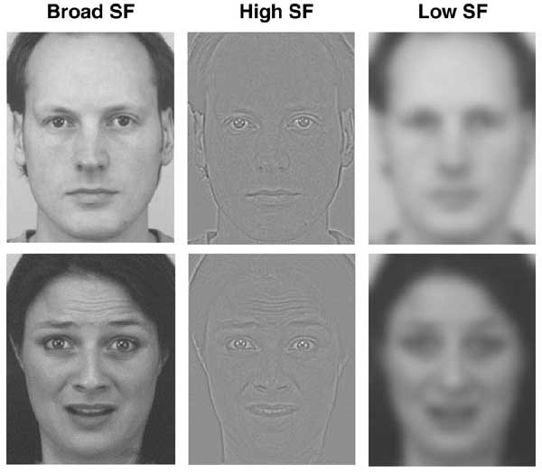
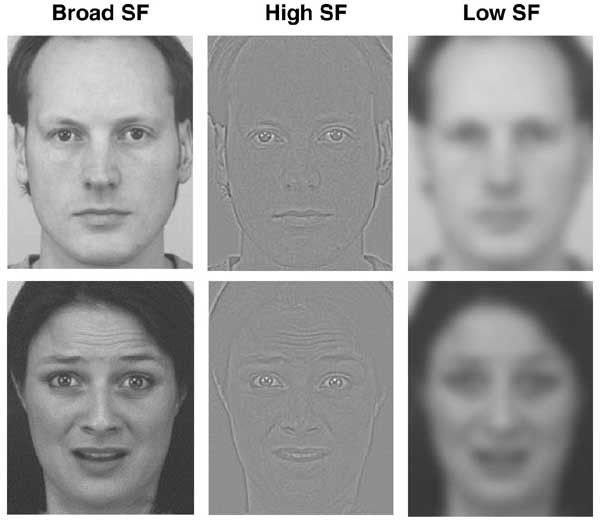
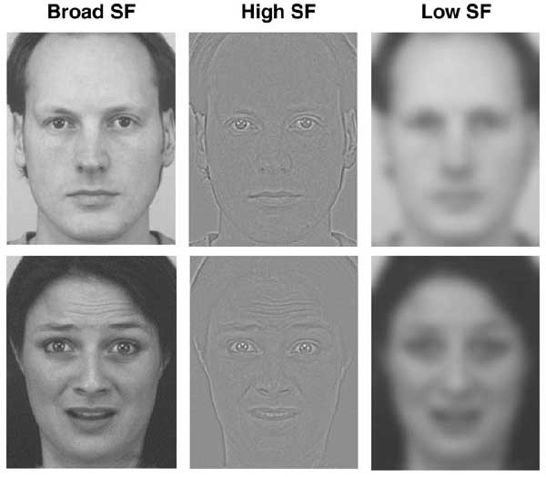

Spatial Frequency
The luminance variation over a distance unit
Low Spatial Frequency
High Spatial Frequency
Rough visual information
Recognised quickly
Local, detailed information
Slow to process

Already I've given up on the guise of making these look like actual slides
 
